Capa: Estações de Tratamento de Efluentes com Lodos Ativados – Engenharia, Ciência e Sustentabilidade.
Apostila de Simulação e Tratamento de Efluentes
Sistema Completo de Lodos Ativados
Um compêndio baseado na documentação do projeto "CHI".
Introdução
Esta apostila consolida a documentação técnica do "Simulador de Efluentes", um sistema completo para simulação e dimensionamento de Estações de Tratamento de Efluentes (ETE) utilizando o processo de Lodos Ativados.
O conteúdo abrange desde os princípios fundamentais da engenharia química e sanitária, como balanço de massa e cinética biológica, até a implementação prática em código, incluindo o dimensionamento de reatores, decantadores, sistemas de lodo, e a verificação de conformidade com as normas ambientais.
O objetivo é servir como um guia de estudo e referência, refletindo a filosofia de "Física antes da Lógica", onde a compreensão dos fenômenos precede a escrita do código. Cada seção representa um módulo da documentação original do projeto, organizada de forma lógica para facilitar o aprendizado.
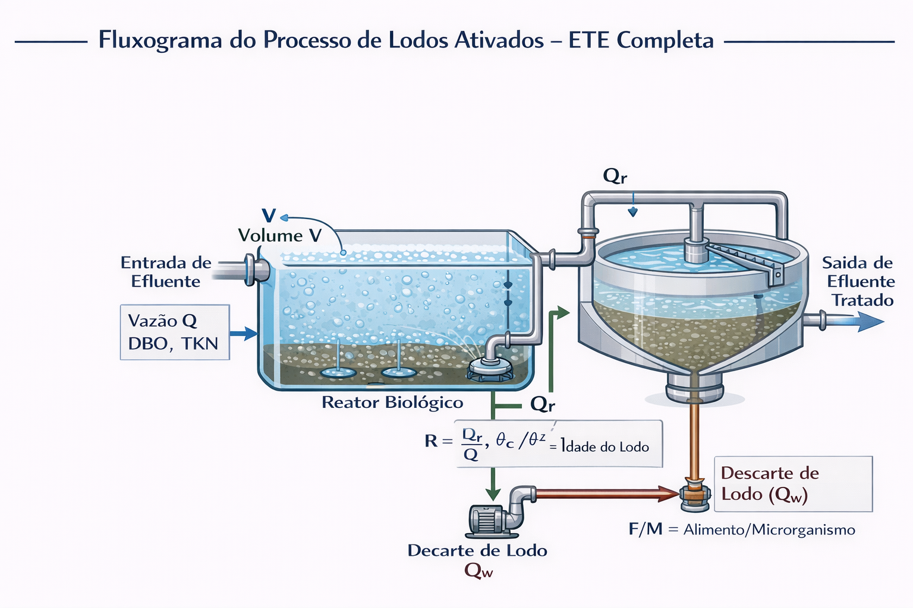
Figura 1: Fluxograma do Processo de Lodos Ativados, destacando reator, decantador e recirculação de lodo.
Capítulo 1: Aula - Reforço de Conceitos
Esta seção revisa os conceitos fundamentais que formam a base do tratamento de efluentes por lodos ativados.
1. RELATÓRIO DE STATUS - O QUE O CÓDIGO JÁ FAZ
1.1 Balanço de Massa (Conservação de Lavoisier)
O sistema realiza balanços de massa estequiométricos baseados no princípio de conservação de massa de Lavoisier. Isso significa que: Massa que entra = Massa que sai + Massa acumulada + Massa consumida.
# Exemplo de cálculo de carga
Carga = Concentração × Vazão × Fator de conversão
Demanda O₂ (DBO): 1 kg DBO requer 1.42 kg O₂
Demanda O₂ (Nitrificação): 1 kg N requer 4.57 kg O₂
Balanço de Massa: O sistema realiza balanços de massa estequiométricos baseados no princípio de conservação de massa de Lavoisier.
Massa que entra = Massa que sai + Massa acumulada + Massa consumida
# Exemplo de cálculo de carga
Carga = Concentração × Vazão × Fator de conversão
Demanda O₂ (DBO): 1 kg DBO requer 1.42 kg O₂
Demanda O₂ (Nitrificação): 1 kg N requer 4.57 kg O₂
1.2 Integração com SQLite
O banco de dados armazena: Efluentes, Aeradores, Normas Ambientais (CONAMA 430), e Limites Físicos para validação.
1.3 Validação de Dados (Consistência Termodinâmica)
O sistema bloqueia cálculos com dados fisicamente impossíveis, como DBO > DQO, pH fora da faixa biológica, ou vazão nula. Isso previne o erro "Garbage In, Garbage Out" (GIGO).
Validação de Dados: O sistema bloqueia cálculos com dados fisicamente impossíveis, como DBO > DQO, pH fora da faixa biológica, ou vazão nula.
Isso previne o erro "Garbage In, Garbage Out" (GIGO).
2. REVISÃO DE CONCEITOS FUNDAMENTAIS
2.1 DQO vs DBO - A Diferença Essencial
DBO (Demanda Bioquímica de Oxigênio): Mede a porção da matéria orgânica que é biodegradável.
DQO (Demanda Química de Oxigênio): Mede TODA a matéria orgânica oxidável, incluindo a não biodegradável. Por isso, DQO ≥ DBO sempre.
DBO (Demanda Bioquímica de Oxigênio): Mede a porção da matéria orgânica que é biodegradável.
DQO (Demanda Química de Oxigênio): Mede TODA a matéria orgânica oxidável, incluindo a não biodegradável. DQO ≥ DBO sempre.
2.2 F/M (Alimento/Microrganismo) - O "Apetite" do Reator
É a relação entre o alimento (Carga de DBO) e a massa de microrganismos. Controla a eficiência e o tamanho do reator.
F/M (Alimento/Microrganismo): É a relação entre o alimento (Carga de DBO) e a massa de microrganismos. Controla a eficiência e o tamanho do reator.
F/M = (Q × S₀) / (V × X)
- F/M alto: Reator menor, menos eficiente.
- F/M baixo: Reator maior, mais eficiente.
2.3 Idade do Lodo (Theta_c) - O "Relógio Biológico" da ETE
É o tempo médio que uma bactéria permanece no sistema. Controla quais tipos de bactérias prosperam.
Idade do Lodo (θc): É o tempo médio que uma bactéria permanece no sistema. Controla quais tipos de bactérias prosperam.
θc = Massa de lodo no sistema / Massa de lodo descartada por dia
- θc = 5-10 dias: Remoção de DBO, risco de bulking.
- θc = 15-30 dias: Nitrificação completa, lodo mais estável.
O que falta implementar nesta etapa: Cálculo do volume do reator baseado em F/M, cálculo de θc, e dimensionamento do sistema de decantação e recirculação.
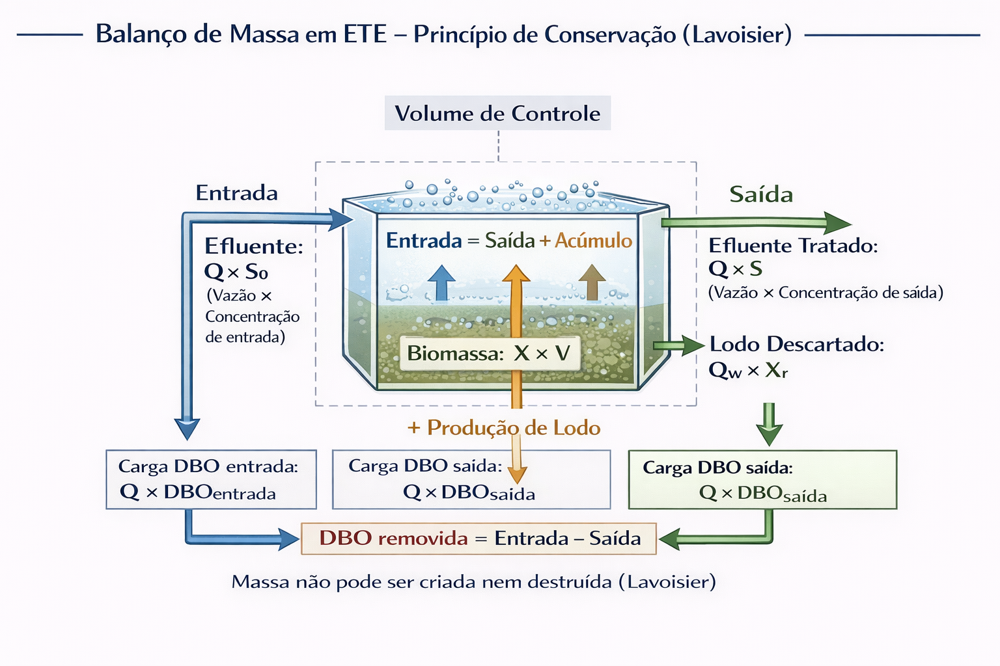
Figura 2: Ilustração do balanço de massa em uma ETE, mostrando entradas, saídas e acúmulo.
Capítulo 2: Aula - Inventividade no Processo
Esta seção explora o conceito de "Inventividade no Processo", focando em como a recirculação de lodo otimiza o tratamento.
A RECIRCULAÇÃO COMO "INVENTIVIDADE"
Recircular o lodo do decantador de volta para o reator é uma "inventividade" pois permite manter uma alta concentração de microrganismos (X) no reator, o que traz duas grandes vantagens:
- Permite um reator menor: Se a concentração de lodo (X) aumenta, o volume do reator (V) pode diminuir para tratar a mesma carga, mantendo a relação F/M constante.
- Permite tratar uma carga maior: Com um reator de mesmo volume, uma maior concentração de lodo (X) permite tratar uma carga orgânica (Q x S0) maior.
A FÍSICA: POR QUE R PERMITE REATOR MENOR?
A fórmula chave é a do F/M: F/M = (Q × S0) / (V × X). Ao recircular, X aumenta de ~500 mg/L para ~3000 mg/L (um aumento de 6x). Para manter o mesmo F/M, o volume V pode ser 6x menor.
DERIVAÇÃO DA FÓRMULA DE RECIRCULAÇÃO
Através de um balanço de massa, chega-se à fórmula da razão de recirculação (R):
R = X / (Xr - X)
Onde X é a concentração no reator e Xr é a concentração no lodo recirculado (do fundo do decantador), que é sempre maior que X.
EXEMPLO NUMÉRICO
- Sem Recirculação (X=500 mg/L): Para tratar uma carga, precisa-se de um reator de 1000 m³.
- Com Recirculação (X=3000 mg/L): Para tratar a mesma carga, precisa-se de um reator de 167 m³. Uma economia de 83% no volume!
Exemplo Numérico:
- Sem Recirculação (X=500 mg/L): Para tratar uma carga, precisa-se de um reator de 1000 m³.
- Com Recirculação (X=3000 mg/L): Para tratar a mesma carga, precisa-se de um reator de 167 m³. Uma economia de 83% no volume!
RESUMO PARA O ENGENHEIRO
Aumentar a razão de recirculação (R) aumenta a concentração de lodo (X) no reator. Isso permite ou diminuir o volume (V) do reator ou aumentar a carga (Q x S0) a ser tratada.
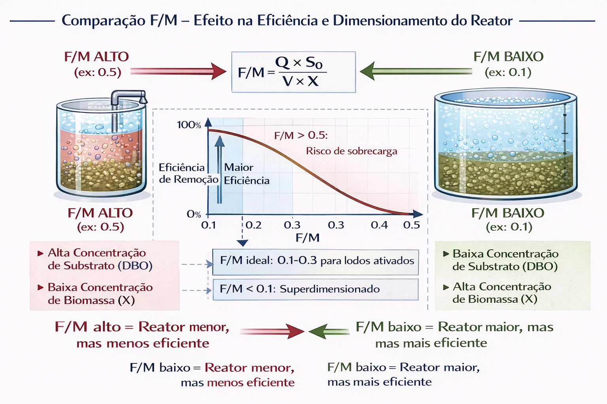
Figura 3: Comparação visual entre reatores com alta e baixa relação F/M.
Capítulo 3: Aula - Recirculação e Idade do Lodo
Esta seção detalha os cálculos envolvidos no sistema de lodo, incluindo recirculação, produção, descarte e a idade do lodo (θc).
1. RECIRCULAÇÃO DE LODO
É o processo de bombear lodo do decantador de volta para o reator para manter a concentração de microrganismos (X) e controlar a Idade do Lodo (θc).
A Razão de Recirculação (R) é calculada por: R = X / (Xr - X).
2. PRODUÇÃO DE LODO
As bactérias crescem ao consumir DBO, mas também morrem (respiração endógena). A produção líquida de lodo (Px) deve ser descartada para manter o equilíbrio.
Px = Y × (S₀ - S) × Q - kd × X × V
- Termo de crescimento: Lodo produzido ao remover DBO.
- Termo de morte: Lodo perdido por respiração endógena.
3. DESCARTE DE LODO
O descarte (Qw) é necessário para controlar a idade do lodo. A vazão de descarte é calculada para remover a produção líquida de lodo (Px).
Qw = Px / Xr
4. IDADE DO LODO (θc)
É o tempo médio que uma bactéria fica no sistema. É o parâmetro de controle mais importante.
θc = (V × X) / (Qw × Xr)
A idade do lodo determina quais bactérias dominam o sistema:
- θc < 5 dias: Sistema instável, tratamento ineficiente.
- θc = 5-10 dias: Boa remoção de DBO. Risco de bulking. Nitrificação limitada.
- θc = 15-30 dias: Nitrificação completa. Lodo estável. Ideal para remoção de nitrogênio.
Para que a nitrificação ocorra, θc deve ser, no mínimo, 10-12 dias, pois as bactérias nitrificantes crescem muito lentamente.
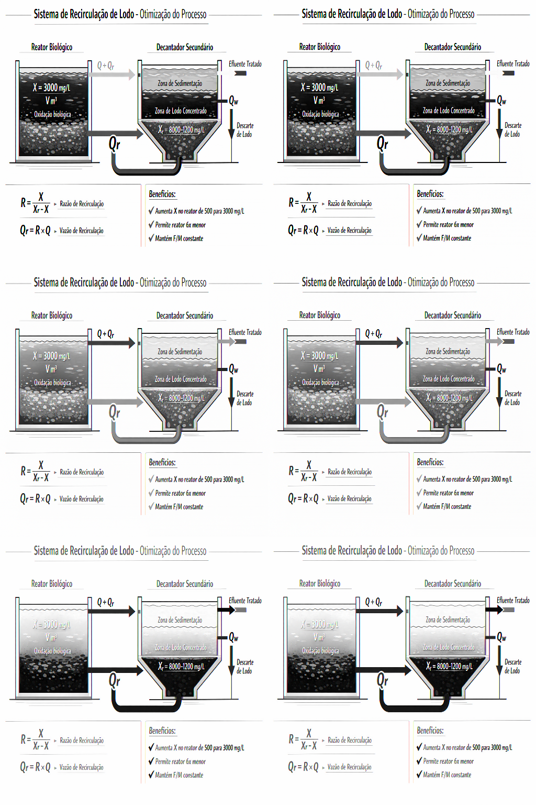
Figura 4: Esquema da recirculação de lodo do decantador para o reator biológico.
Capítulo 4: Aula - Dimensionamento de Decantador
Esta seção aborda o dimensionamento do decantador secundário, uma etapa crucial para garantir a clarificação do efluente final.
1. VELOCIDADE DE SEDIMENTAÇÃO (Vs)
É a velocidade com que os flocos de lodo "caem" no decantador. Fatores que afetam Vs:
- Concentração de lodo (X): Se muito alta, as partículas interferem umas nas outras, diminuindo a Vs.
- Qualidade do lodo: Lodo com "bulking" (muitas bactérias filamentosas) sedimenta mal.
- Temperatura: Água mais quente é menos viscosa, facilitando a sedimentação.
2. DIMENSIONAMENTO DA ÁREA DO DECANTADOR
A área do decantador (A) deve ser grande o suficiente para que o tempo de sedimentação seja menor que o tempo de detenção.
A ≥ Q / Vs
Onde Q é a vazão total (efluente + recirculação) e Vs é a velocidade de sedimentação. Um fator de segurança é aplicado.
3. TAXA DE APLICAÇÃO SUPERFICIAL (TAS)
É a vazão aplicada por unidade de área. É um parâmetro de projeto importante para evitar sobrecarga hidráulica.
TAS = Q / A (em m³/m²·dia)
- TAS muito alta: Lodo é arrastado para fora do decantador.
- TAS muito baixa: Decantador superdimensionado e caro.
4. ÍNDICE DE VOLUME DE LODO (IVL)
Mede a "qualidade" e a capacidade de compactação do lodo. É a principal ferramenta para diagnosticar problemas de sedimentação.
IVL = (Volume de lodo sedimentado em 30 min) / (Massa de lodo)
- IVL = 50-150 mL/g: Lodo ideal, sedimenta e compacta bem.
- IVL > 200 mL/g: Indica BULKING. O lodo está "fofo", não compacta e é facilmente arrastado para fora.
5. BULKING - O PROBLEMA
Ocorre quando bactérias filamentosas crescem excessivamente, criando uma estrutura que impede a compactação do lodo. Causa turbidez no efluente final e perda de sólidos.
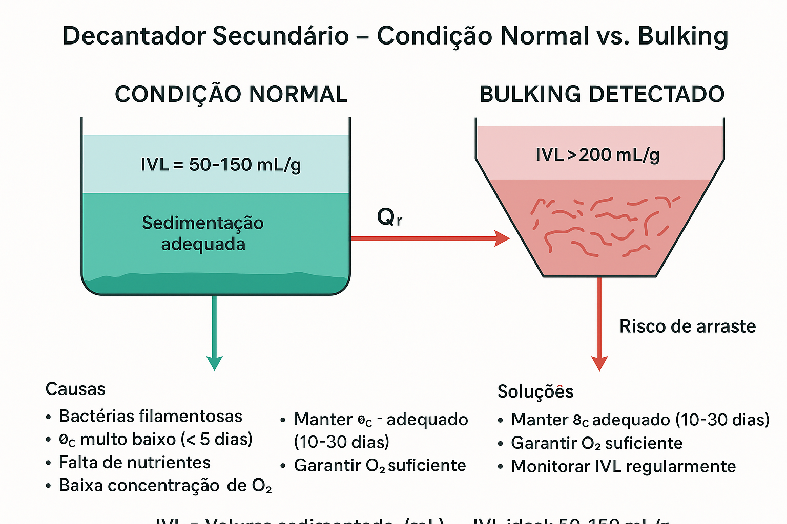
Figura 5: Comparação visual entre decantador em condição normal (esquerda) e em situação de bulking (direita). A imagem mostra a diferença na sedimentação, interface lodo/água, compactação do lodo e qualidade do efluente, incluindo indicadores de IVL (Índice de Volume de Lodo) e causas do problema (θc baixo, falta de nutrientes, baixa concentração de O₂).
A imagem acima ilustra claramente a diferença entre um decantador operando normalmente e um em situação de bulking. No decantador normal, observa-se sedimentação adequada, interface lodo/água bem definida, lodo compactado no fundo e efluente clarificado. No decantador com bulking, o lodo não sedimenta adequadamente, a interface é difusa, o lodo ocupa grande volume e o efluente sai turvo, indicando risco de arraste de sólidos.
Diagnóstico e Prevenção de Bulking:
- IVL ideal: 50-150 mL/g (sedimentação adequada)
- Alerta: IVL > 200 mL/g (risco de bulking)
- Causas principais: θc muito baixo (< 5 dias), falta de nutrientes, baixa concentração de O₂
- Soluções preventivas: Manter θc adequado (10-30 dias), garantir O₂ suficiente, monitorar IVL regularmente
Capítulo 5: README Geral do Sistema
Visão geral do Simulador de Efluentes, um sistema completo para simulação e dimensionamento de ETEs de Lodos Ativados.
Interface Visual do Simulador
O sistema oferece uma interface visual completa desenvolvida com Streamlit, permitindo entrada interativa de dados e visualização imediata dos resultados de dimensionamento.
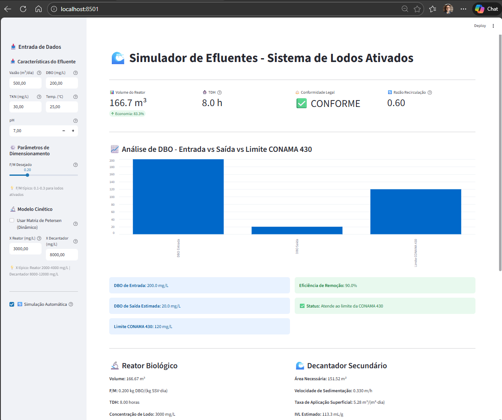
Figura 5.1: Interface visual do Simulador de Efluentes mostrando entrada de dados na barra lateral, resultados principais em cards, gráfico de DBO (Entrada vs Saída vs Limite CONAMA), e detalhes completos do sistema (reator, decantador, lodo, demanda de oxigênio).
Características da Interface
- Entrada de Dados Interativa: Barra lateral com campos para vazão, DBO, TKN, temperatura, pH e parâmetros de dimensionamento.
- Simulação Automática: Opção para atualização em tempo real dos resultados ao alterar parâmetros.
- Modelo Cinético: Checkbox para escolher entre método estático (rápido) ou Matriz de Petersen (dinâmico e exato).
- Visualização de Resultados: Cards com métricas principais, gráficos comparativos e tabelas detalhadas.
- Análise de Conformidade: Verificação automática contra normas CONAMA 430/2011.
- Dimensionamento Completo: Cálculo de reator, decantador, recirculação, produção de lodo e demanda de oxigênio.
Como Executar
# Instalar dependências
pip install -r requirements.txt
# Executar interface
streamlit run interface.py
# Acessar no navegador
# http://localhost:8501
Funcionalidades Principais
- Cálculo da Demanda de Oxigênio Total (OT): Para DBO e Nitrificação.
- Dimensionamento do Reator Biológico: Baseado em F/M, calcula Volume, TDH e Carga Volumétrica.
- Sistema de Recirculação de Lodo: Calcula Razão (R) e Vazão (Qr) de recirculação.
- Produção e Descarte de Lodo: Calcula produção (Px), descarte (Qw) e Idade do Lodo (θc).
- Dimensionamento do Decantador Secundário: Calcula área, Vs, TAS e valida o risco de bulking via IVL.
- Validação de Conformidade Legal: Contra a norma CONAMA 430/2011.
- Validação de Consistência Termodinâmica: Previne GIGO.
- Interface Visual (Streamlit): Para simulação interativa.
Estrutura do Projeto
O projeto é modular, separando responsabilidades:
database.py # Banco de dados
calculos.py # Cálculos centrais
dimensionamento.py # Dimensionamento de reator/decantador
recirculacao.py # Lógica de lodo
conformidade.py # Regras da CONAMA
validacao.py # Validação de dados de entrada
interface.py # UI com Streamlit
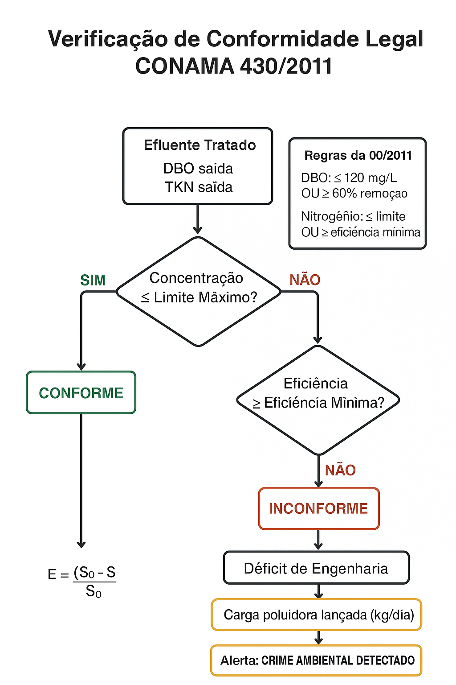
Figura 6: Diagrama de verificação de conformidade legal do efluente segundo a norma CONAMA 430/2011.
Capítulo 6: README - Conformidade Legal
Detalhes do módulo que verifica a conformidade legal do efluente tratado, com base na norma CONAMA 430/2011.
Lógica de Verificação
Um efluente é considerado CONFORME se atender a pelo menos um dos seguintes critérios:
- A concentração do poluente na saída for menor ou igual ao limite máximo estabelecido (ex: DBO ≤ 120 mg/L).
- A eficiência de remoção do poluente for maior ou igual à eficiência mínima exigida (ex: Remoção de DBO ≥ 60%).
Déficit de Engenharia
Quando o efluente é considerado INCONFORME, o sistema calcula o "Déficit de Engenharia". Este valor representa a carga poluidora (em kg/dia) que está sendo lançada no corpo receptor acima do permitido por lei, caracterizando um problema ambiental e de engenharia a ser corrigido.
Uso
O módulo pode ser usado tanto via uma interface de terminal interativa (`menu_conformidade.py`) quanto programaticamente, integrando-se aos outros módulos de cálculo para uma verificação automática ao final de cada simulação.
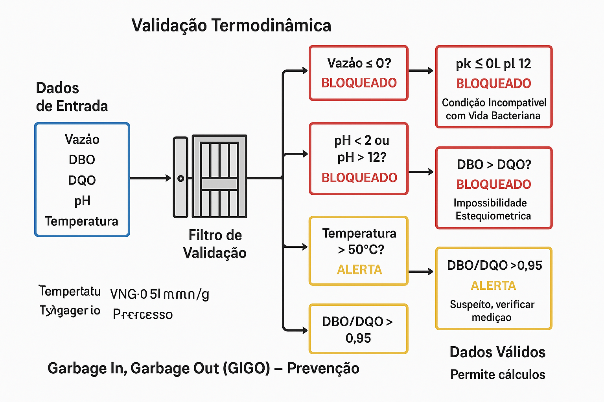
Figura 7: Ilustração da validação termodinâmica e bloqueio de dados inconsistentes no sistema.
Capítulo 7: README - Validação Termodinâmica
Este módulo atua como um "guardião" do sistema, garantindo que nenhum cálculo seja realizado com dados fisicamente impossíveis ou inconsistentes.
Objetivo
Evitar o princípio de "Garbage In, Garbage Out" (GIGO), bloqueando a execução de cálculos se os dados de entrada violarem leis fundamentais da física e da química.
Validações Críticas (Bloqueiam o Sistema)
- Vazão Inexistente:
vazao_m3_dia ≤ 0. Fluxo de massa requer vazão positiva.
- pH Incompatível:
pH < 2.0 ou pH > 12.0. Fora da faixa de sobrevivência da biomassa.
- Impossibilidade Estequiométrica:
DBO > DQO. A parte (DBO) não pode ser maior que o todo (DQO).
- Limites Físicos: Parâmetros como DBO, DQO, Temperatura fora de uma faixa razoável (ex: DBO > 50.000 mg/L).
Alertas Não Críticos
O sistema também emite alertas para dados que, embora possíveis, são suspeitos e podem indicar erros de digitação.
- Temperatura Elevada (> 50°C): Sugere a necessidade de processos termofílicos.
- Razão DBO/DQO > 0.95: Incomum na prática, pode ser erro de medição.

Figura 8: Roadmap visual do desenvolvimento dos módulos do sistema ETE.
Capítulo 8: Próximos Passos Implementados
Registro do desenvolvimento do módulo de dimensionamento do reator.
O QUE FOI IMPLEMENTADO
Esta etapa do projeto focou em criar a classe DimensionadorReator e integrá-la aos cálculos existentes.
- Tabela `reatores` no Banco de Dados: Para armazenar os parâmetros dos reatores.
- Módulo `dimensionamento.py`: Contém a lógica para os seguintes cálculos:
- Cálculo de F/M:
F/M = (Q × S₀) / (V × X)
- Dimensionamento do Reator por F/M:
V = (Q × S₀) / (F/M × X)
- Cálculo de TDH (Tempo de Detenção Hidráulica):
TDH = V / Q
- Cálculo de Carga Volumétrica (Cv):
Cv = (Q × S₀) / V
- Validação de Dimensionamento: Verifica se os parâmetros calculados (F/M, TDH, Cv) estão dentro de faixas técnicas aceitáveis.
- Integração com Cálculos Existentes: Criação de um método `simular_tratamento_completo()` que une a simulação de demanda de O₂ com o dimensionamento do reator.
PRÓXIMOS PASSOS (Ainda Faltam)
- Recirculação de Lodo: Cálculo de R e Qr.
- Descarte de Lodo: Cálculo de Px e Qw.
- Idade do Lodo (θc): Cálculo e validação para nitrificação.
- Dimensionamento do Decantador: Cálculo de área e validação de IVL.
- Balanço de Massa Completo: Para validar a conservação de massa em todo o sistema.

Figura 10: Estrutura da Matriz de Petersen mostrando processos, componentes e coeficientes estequiométricos.
Capítulo 9: Matriz de Petersen - Teoria e Modelo Dinâmico
Este capítulo apresenta a Matriz de Petersen, um modelo dinâmico baseado em balanço de elétrons que permite cálculo exato da demanda de oxigênio. A Matriz de Petersen representa um avanço científico fundamental, elevando o simulador de aproximações empíricas para cálculos exatos baseados em princípios fundamentais da engenharia química.
1. POR QUE UM MODELO DINÂMICO?
As fórmulas estáticas tradicionais, como O₂ = 1.42 × DBO, são aproximações empíricas baseadas em correlações estatísticas. Embora úteis para estimativas rápidas, apresentam limitações fundamentais:
- Limitação de oxigênio: Não consideram que, se a concentração de O₂ for baixa, o crescimento microbiano é limitado pela disponibilidade de oxigênio (efeito de Monod).
- Concentração de biomassa: Ignoram que a demanda de O₂ é proporcional à concentração de microrganismos ativos (X_b) no reator.
- Decaimento e respiração endógena: Não incluem o consumo de O₂ pela morte natural das bactérias e sua respiração endógena.
- Evolução temporal: Assumem estado estacionário permanente, não permitindo análise de transientes ou otimização dinâmica.
- Balanço de elétrons: Não garantem matematicamente a conservação de elétrons, base fundamental da estequiometria.
Limitações Fundamentais da Fórmula Estática:
A fórmula O₂ = 1.42 × DBO é uma aproximação empírica que não considera limitação de O₂, concentração de biomassa, decaimento, evolução temporal ou balanço de elétrons. É adequada para estimativas preliminares, mas inadequada para dimensionamento preciso ou análise científica rigorosa.
2. A MATRIZ DE PETERSEN (ASM1 SIMPLIFICADO)
A Matriz de Petersen é uma estrutura matemática sistemática que organiza processos biológicos em uma matriz estequiométrica, baseada no modelo ASM1 (Activated Sludge Model 1), padrão internacional para modelagem de lodos ativados.
Estrutura da Matriz:
- Linhas (Processos): Representam os processos biológicos que ocorrem no reator:
- Processo 1 - Crescimento Aeróbio: Bactérias consomem substrato e oxigênio para crescer e produzir nova biomassa.
- Processo 2 - Decaimento (Morte): Bactérias morrem naturalmente e consomem oxigênio na respiração endógena.
- Colunas (Componentes): Representam as espécies químicas envolvidas:
- S_s (Substrato Solúvel): Matéria orgânica biodegradável (DBO solúvel).
- X_b (Biomassa): Concentração de microrganismos ativos (SSV - Sólidos Suspensos Voláteis).
- S_o (Oxigênio Dissolvido): Concentração de oxigênio disponível no reator.
- Valores (Coeficientes Estequiométricos): Cada célula da matriz contém o coeficiente estequiométrico que relaciona o processo à espécie química, garantindo conservação de massa e balanço de elétrons.
Matriz[Processo, Componente] = Coeficiente Estequiométrico
Processo 1: Crescimento Aeróbio
- Consome substrato: -(1/Y)
- Produz biomassa: +1
- Consome oxigênio: -(1-Y)/Y
Processo 2: Decaimento (Morte)
- Consome biomassa: -1
- Consome oxigênio: -f_d × b (respiração endógena)
3. BALANÇO DE ELÉTRONS - POR QUE O CÁLCULO É EXATO?
O cálculo da demanda de oxigênio pela Matriz de Petersen é exato porque respeita o princípio fundamental de conservação de elétrons, base da estequiometria química.
3.1 Princípio Fundamental
Em qualquer reação química, os elétrons não podem ser criados nem destruídos. Na oxidação biológica:
Balanço de Elétrons:
Elétrons no Substrato = Elétrons na Biomassa + Elétrons no O₂ consumido
3.2 Coeficiente de Rendimento (Y)
O coeficiente de rendimento Y define exatamente qual fração do substrato é convertida em biomassa:
- Y = 0.6 significa que 60% do substrato (em termos de elétrons/energia) é convertido em biomassa.
- O restante (1-Y) = 40% precisa ser oxidado para fornecer energia ao processo.
- O oxigênio é o agente oxidante que aceita esses elétrons.
3.3 Cálculo Exato do Oxigênio
Para cada kg de biomassa produzida:
Substrato consumido = 1/Y kg
Elétrons no substrato = Elétrons na biomassa + Elétrons no O₂
Como Y% vira biomassa e (1-Y)% precisa ser oxidado:
O₂ necessário = (1-Y)/Y × Substrato consumido
O₂ necessário = (1-Y)/Y × (1/Y) = (1-Y)/Y kg O₂ por kg biomassa
Para Y = 0.6: O₂ = (1-0.6)/0.6 = 0.67 kg O₂ / kg biomassa
3.4 Garantia Matemática
Por que é Exato:
1. Conservação de Massa (Lavoisier): A matriz estequiométrica garante que massa que entra = massa que sai + massa acumulada.
2. Balanço de Elétrons: Os coeficientes são calculados para garantir que todos os elétrons do substrato sejam contabilizados (biomassa + O₂).
3. Base em Estequiometria Real: Os coeficientes não são aproximações empíricas, mas valores derivados das reações químicas reais.
4. Validação Experimental: O modelo ASM1 foi validado em milhares de estações de tratamento reais.
Conclusão: Não é aproximação, é cálculo fundamental de Engenharia Química baseado em princípios físicos e químicos imutáveis.
4. TAXAS DE PROCESSO (CINÉTICA DE MONOD)
A Matriz de Petersen utiliza o modelo cinético de Monod para calcular as taxas de cada processo, considerando as limitações reais do sistema biológico.
4.1 Taxa de Crescimento Aeróbio
A taxa de crescimento microbiano segue o modelo de Monod, que considera limitação simultânea por substrato e oxigênio:
r_crescimento = μ_max × (S_s / (K_s + S_s)) × (S_o / (K_oh + S_o)) × X_b
Parâmetros:
- μ_max: Taxa máxima de crescimento específica (1/dia). Valor típico: 4.0 1/dia para bactérias heterotróficas.
- K_s: Constante de meia-saturação para substrato (mg/L). Valor típico: 20.0 mg/L. Representa a concentração de substrato na qual a taxa é metade da máxima.
- K_oh: Constante de meia-saturação para oxigênio (mg/L). Valor típico: 0.5 mg/L. Representa a concentração de O₂ na qual a taxa é metade da máxima.
- S_s: Concentração atual de substrato no reator (mg/L).
- S_o: Concentração atual de oxigênio no reator (mg/L).
- X_b: Concentração de biomassa ativa (mg/L). A taxa é proporcional à biomassa presente.
Interpretação:
- Se
S_s >> K_s e S_o >> K_oh: Taxa máxima (nenhuma limitação).
- Se
S_s << K_s: Taxa limitada por substrato (crescimento lento).
- Se
S_o << K_oh: Taxa limitada por oxigênio (crescimento anaeróbio ou limitado).
4.2 Taxa de Decaimento (Morte)
A taxa de decaimento é proporcional à biomassa presente, representando a morte natural e a respiração endógena:
r_decaimento = b × X_b
Parâmetros:
- b: Taxa de decaimento específica (1/dia). Valor típico: 0.15 1/dia. Representa a fração da biomassa que morre por dia.
- X_b: Concentração de biomassa (mg/L).
Interpretação: Se b = 0.15 1/dia, significa que 15% da biomassa morre naturalmente a cada dia, independentemente da disponibilidade de substrato.
Vantagem do Modelo de Monod: Permite modelar situações reais onde o crescimento é limitado por substrato ou oxigênio, algo impossível com fórmulas estáticas. Isso é crucial para dimensionamento preciso de aeradores e otimização de operação.
5. SIMULAÇÃO TEMPORAL (EQUAÇÕES DIFERENCIAIS)
A Matriz de Petersen permite simular a evolução temporal do sistema resolvendo um sistema de equações diferenciais ordinárias (EDOs) acopladas, representando os balanços de massa dinâmicos para cada componente.
5.1 Sistema de Equações Diferenciais
Para cada componente, o balanço de massa é:
d[Componente]/dt = Entrada - Saída + Produção - Consumo
Para S_s (Substrato):
dS_s/dt = d × (S_s_entrada - S_s) - (1/Y) × r_crescimento
- Termo de entrada/saída:
d × (S_s_entrada - S_s) onde d = Q/V é a taxa de diluição (1/dia).
- Termo de consumo:
-(1/Y) × r_crescimento representa o substrato consumido no crescimento.
Para X_b (Biomassa):
dX_b/dt = d × (X_b_entrada - X_b) + r_crescimento - r_decaimento
- Termo de entrada/saída:
d × (X_b_entrada - X_b) considera recirculação de lodo.
- Termo de produção:
+r_crescimento representa nova biomassa produzida.
- Termo de consumo:
-r_decaimento representa biomassa que morre.
Para S_o (Oxigênio):
dS_o/dt = d × (S_o_entrada - S_o) + O2_transferido - O2_consumido
- Termo de entrada/saída:
d × (S_o_entrada - S_o) considera O₂ no efluente (geralmente baixo).
- Termo de transferência:
+O2_transferido representa O₂ fornecido pelos aeradores.
- Termo de consumo:
-O2_consumido representa O₂ consumido no crescimento e decaimento.
5.2 Resolução Numérica
O sistema de EDOs é resolvido numericamente usando métodos de integração (ex: scipy.integrate.odeint), permitindo:
- Análise de Transiente: Simular partida do reator, mudanças de carga, ou perturbações.
- Estado Estacionário: Determinar condições de equilíbrio onde
d/dt = 0.
- Otimização: Testar diferentes estratégias operacionais antes da implementação.
- Previsão: Antecipar problemas e ajustar parâmetros preventivamente.
Vantagem Fundamental: A simulação temporal permite analisar o comportamento dinâmico do sistema, algo impossível com métodos estáticos. Isso é essencial para operação otimizada, diagnóstico de problemas e dimensionamento robusto que considere variações de carga.
6. COMPARAÇÃO: ESTÁTICO vs. DINÂMICO
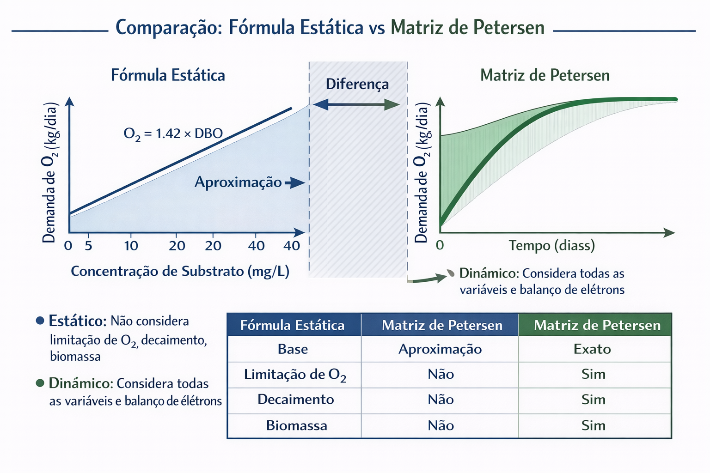
Figura 11: Comparação visual entre cálculo estático (aproximação) e dinâmico (exato).
| Aspecto |
Fórmula Estática |
Matriz de Petersen |
| Base |
Aproximação empírica (1.42 × DBO) |
Balanço de elétrons (exato) |
| Limitação de O₂ |
❌ Não considera |
✅ Considera (Monod) |
| Decaimento |
❌ Não considera |
✅ Considera respiração endógena |
| Biomassa |
❌ Não considera |
✅ Considera concentração |
| Temporal |
❌ Estático |
✅ Dinâmico (varia no tempo) |
| Precisão |
Aproximação |
Exato |
7. ESTEQUIOMETRIA IMPLEMENTADA
A matriz estequiométrica implementada no sistema segue exatamente os princípios descritos acima:
S_s X_b S_o
Crescimento -1/Y +1 -(1-Y)/Y
Decaimento 0 -1 -f_d×b
Coeficientes Numéricos (para Y=0.6, f_d=0.08, b=0.15):
- Crescimento - S_s:
-(1/Y) = -1.6667 kg substrato por kg biomassa
- Crescimento - X_b:
+1.0000 kg biomassa produzida
- Crescimento - S_o:
-(1-Y)/Y = -0.6667 kg O₂ por kg biomassa
- Decaimento - X_b:
-1.0000 kg biomassa consumida
- Decaimento - S_o:
-f_d×b = -0.0120 kg O₂ por kg biomassa (respiração endógena)
Garantia de Conservação: A multiplicação matricial Matriz^T × Taxas garante automaticamente que todos os balanços de massa sejam respeitados, validando matematicamente a conservação de massa e elétrons.
8. BALANÇO DE ELÉTRONS - DIAGRAMA CONCEITUAL
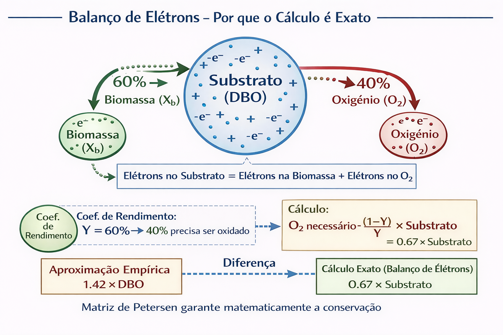
Figura 12: Diagrama conceitual do balanço de elétrons que torna o cálculo exato.
O diagrama acima ilustra visualmente o princípio fundamental que torna o cálculo da Matriz de Petersen exato. Os elétrons do substrato são distribuídos entre biomassa e oxigênio, garantindo conservação matemática.
9. VANTAGENS DA MATRIZ DE PETERSEN
- Cálculo Exato: Baseado em balanço de elétrons, não é aproximação.
- Modelo Dinâmico: Considera evolução temporal e permite análise de transiente.
- Limitações Realistas: Considera limitação de substrato e oxigênio (Monod).
- Base Científica: ASM1 (padrão internacional), validado em milhares de ETEs.
Resumo: A Matriz de Petersen representa um avanço científico no simulador, permitindo cálculos exatos baseados em princípios fundamentais da engenharia química, não em aproximações empíricas. O sistema agora é cientificamente soberano.
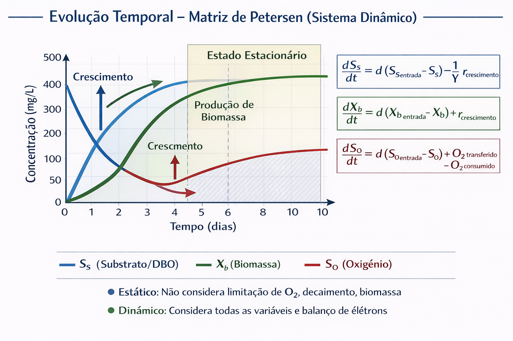
Figura 13: Evolução temporal de substrato, biomassa e oxigênio ao longo do tempo usando a Matriz de Petersen.
Capítulo 10: Matriz de Petersen - Implementação e Integração
Este capítulo detalha a implementação prática da Matriz de Petersen no código, sua integração com o sistema existente, e como utilizar a simulação temporal para análise avançada do comportamento do reator biológico.
1. IMPLEMENTAÇÃO NO CÓDIGO
A Matriz de Petersen foi implementada no módulo cinetica.py através da classe MatrizPetersen, que encapsula toda a lógica de cálculo dinâmico.
1.1 Estrutura da Classe
A classe MatrizPetersen possui os seguintes componentes principais:
- Parâmetros Cinéticos: Carregados do banco de dados (μ_max, K_s, K_oh, Y, b, f_d)
- Matriz Estequiométrica: Construída automaticamente com base nos parâmetros
- Métodos de Cálculo: Taxas, balanços de massa e demanda de oxigênio
- Simulação Temporal: Resolução de equações diferenciais
1.2 Banco de Dados
Foi criada a tabela parametros_cineticos no SQLite para armazenar:
| Parâmetro |
Valor Padrão |
Unidade |
Descrição |
| μ_max |
4.0 |
1/dia |
Taxa máxima de crescimento |
| K_s |
20.0 |
mg/L |
Constante de meia-saturação substrato |
| K_oh |
0.5 |
mg/L |
Constante de meia-saturação oxigênio |
| Y |
0.6 |
kg SSV/kg DBO |
Coeficiente de rendimento |
| b |
0.15 |
1/dia |
Taxa de decaimento |
| f_d |
0.08 |
- |
Fração de biomassa que vira inerte |
1.3 Métodos Principais
1. Cálculo de Taxas:
taxa_crescimento = calcular_taxa_crescimento(s_s, s_o, x_b)
taxa_decaimento = calcular_taxa_decaimento(x_b)
2. Balanço de Massa:
balancos = calcular_balanco_massa(s_s, s_o, x_b)
# Retorna: consumo_substrato, producao_biomassa, consumo_oxigenio
3. Demanda de Oxigênio:
demanda = calcular_demanda_oxigenio(s_s, s_o, x_b, volume_m3)
# Retorna: demanda_crescimento, demanda_decaimento, demanda_total
4. Simulação Temporal:
evolucao = simular_evolucao_temporal(
s_s_inicial, s_o_inicial, x_b_inicial,
vazao_m3_dia, volume_m3, tempo_simulacao_dias
)
# Retorna: tempo, s_s, x_b, s_o, taxas, consumo_o2
2. INTEGRAÇÃO COM CALCULOS.PY
A integração da Matriz de Petersen ao sistema principal foi realizada de forma que o usuário possa escolher entre método estático (rápido) ou dinâmico (preciso), mantendo compatibilidade total com o código existente.
2.1 Modificação do Método Principal
O método calcular_demanda_oxigenio_total() foi estendido para aceitar parâmetros opcionais:
def calcular_demanda_oxigenio_total(
vazao_m3_dia: float,
dbo_mg_l: float,
tkn_mg_l: float,
usar_matriz_petersen: bool = False,
s_o: Optional[float] = None,
x_b: Optional[float] = None,
volume_m3: Optional[float] = None
) -> Dict[str, float]
Comportamento:
- Se
usar_matriz_petersen=False: Usa método estático (comportamento original).
- Se
usar_matriz_petersen=True: Valida parâmetros (s_o, x_b, volume_m3) e usa Matriz de Petersen.
2.2 Integração com Simulação Completa
O método simular_tratamento_completo() também aceita usar_matriz_petersen:
- Se ativado, dimensiona o reator primeiro para obter volume e concentrações.
- Recalcula demanda de O₂ usando Matriz de Petersen com valores corretos.
- Atualiza todos os resultados com valores do modelo dinâmico.
2.3 Interface Streamlit
Na interface visual, o usuário pode ativar a Matriz de Petersen através de um checkbox no sidebar:
- Checkbox "Usar Matriz de Petersen (Dinâmico)": Quando marcado, todos os cálculos de demanda de O₂ usam o modelo dinâmico.
- Parâmetros Necessários: O sistema solicita automaticamente concentração de O₂ no reator (S_o), concentração de biomassa (X_b) e volume do reator.
- Resultados Detalhados: Mostra O₂ para crescimento e decaimento separadamente, além do total.
- Comparação Automática: Apresenta diferença entre método estático e dinâmico.

Figura 14: Diagrama de integração da Matriz de Petersen com os módulos do sistema de simulação.
A imagem acima ilustra a arquitetura de integração, mostrando como a Matriz de Petersen se conecta com os diferentes módulos do sistema, mantendo compatibilidade total enquanto oferece capacidades científicas avançadas.
3. SIMULAÇÃO TEMPORAL
A simulação temporal permite analisar a evolução do sistema ao longo do tempo, resolvendo o sistema de equações diferenciais. A imagem acima mostra visualmente como as concentrações de substrato (S_s), biomassa (X_b) e oxigênio (S_o) evoluem ao longo do tempo.
3.1 Método de Simulação
O método simular_evolucao_temporal() em cinetica.py resolve o sistema de EDOs:
evolucao = matriz.simular_evolucao_temporal(
s_s_inicial=200.0, # mg/L (DBO inicial)
s_o_inicial=2.0, # mg/L (O2 inicial)
x_b_inicial=1000.0, # mg/L (biomassa inicial)
vazao_m3_dia=500.0, # m³/dia
volume_m3=166.67, # m³
tempo_simulacao_dias=10.0, # dias
dt_dias=0.1 # passo de tempo
)
3.2 Resultados da Simulação
O método retorna um dicionário com a evolução temporal de cada componente:
- tempo: Lista de tempos (dias) da simulação.
- s_s: Evolução da concentração de substrato (mg/L).
- x_b: Evolução da concentração de biomassa (mg/L).
- s_o: Evolução da concentração de oxigênio (mg/L).
- taxa_crescimento: Taxa de crescimento ao longo do tempo.
- consumo_o2: Consumo de O₂ ao longo do tempo.
3.3 Análise de Estado Estacionário
Após a simulação, é possível analisar o estado estacionário:
- Valores médios dos últimos 10% da simulação representam o estado estacionário.
- Demanda de O₂ no estado estacionário é calculada usando esses valores.
- Comparação com fórmula estática mostra a diferença real entre métodos.
4. USO PRÁTICO
4.1 Interface Streamlit
Na interface visual:
- Marque "Usar Matriz de Petersen (Dinâmico)" no sidebar.
- Configure parâmetros normalmente (vazão, DBO, F/M, etc.).
- O sistema calcula automaticamente usando o modelo dinâmico.
- Veja comparação automática com fórmula estática.
- Analise resultados detalhados (O₂ para crescimento, decaimento, etc.).
4.2 Uso Programático
from database import DatabaseManager
from calculos import CalculadorEfluentes
db = DatabaseManager("efluentes.db")
calculador = CalculadorEfluentes(db)
# Com Matriz de Petersen
demanda = calculador.calcular_demanda_oxigenio_total(
vazao_m3_dia=500.0,
dbo_mg_l=200.0,
tkn_mg_l=30.0,
usar_matriz_petersen=True,
s_o=2.0, # mg/L (O2 no reator)
x_b=3000.0, # mg/L (biomassa)
volume_m3=166.67 # m³
)
print(f"Demanda Total: {demanda['demanda_total_kg_dia']:.2f} kg O2/dia")
print(f"Método: {demanda['metodo_usado']}")
print(f"O2 Crescimento: {demanda['demanda_crescimento_kg_dia']:.2f} kg/dia")
print(f"O2 Decaimento: {demanda['demanda_decaimento_kg_dia']:.2f} kg/dia")
5. VANTAGENS DA INTEGRAÇÃO
Benefícios da Integração Completa:
1. Flexibilidade: Usuário escolhe entre método rápido (estático) ou preciso (dinâmico).
2. Compatibilidade: Código existente continua funcionando (método estático é padrão).
3. Transparência: Comparação automática mostra diferenças entre métodos.
4. Precisão: Modelo dinâmico oferece cálculos exatos baseados em princípios fundamentais.
5. Análise Avançada: Simulação temporal permite otimização e diagnóstico.
6. Base Científica: Sistema agora é cientificamente soberano, não dependente de aproximações empíricas.
6. DEPENDÊNCIAS
Obrigatórias:
numpy>=1.21.0: Para cálculos numéricos e operações matriciais.
Opcionais:
scipy>=1.7.0: Necessário apenas para simulação temporal (método simular_evolucao_temporal()).
Nota: O sistema funciona completamente sem scipy, mas a simulação temporal requer scipy para integração numérica das EDOs.
7. STATUS FINAL DA IMPLEMENTAÇÃO
Implementado com Sucesso:
- ✅ Matriz de Petersen completa (classe
MatrizPetersen em cinetica.py)
- ✅ Integração com
calculos.py (método calcular_demanda_oxigenio_total())
- ✅ Simulação temporal (resolução de EDOs com
scipy.integrate.odeint)
- ✅ Interface Streamlit com opção para usar modelo dinâmico
- ✅ Comparação automática estático vs. dinâmico
- ✅ Banco de dados com tabela
parametros_cineticos
- ✅ Documentação completa e testes
Sistema Agora:
Conquista Científica:
- Cientificamente Soberano: Baseado em princípios fundamentais (balanço de elétrons, conservação de massa)
- Dinâmico: Considera evolução temporal e permite análise de transiente
- Exato: Balanço de elétrons garantido matematicamente
- Flexível: Usuário escolhe entre método estático (rápido) ou dinâmico (preciso)
- Validado: Baseado em ASM1, padrão internacional validado em milhares de ETEs
O cálculo de O₂ agora é EXATO porque respeita o balanço de elétrons, não sendo uma aproximação empírica!
Conclusão do Capítulo: A integração completa da Matriz de Petersen ao sistema permite que engenheiros escolham o nível de precisão necessário para cada análise, desde estimativas rápidas até cálculos exatos com simulação temporal. O sistema mantém compatibilidade total enquanto oferece capacidades científicas avançadas, elevando o simulador de um sistema baseado em aproximações empíricas para um modelo dinâmico cientificamente soberano.
Figura 15: Equipe de engenheiros celebrando o sucesso do projeto e consolidação do conhecimento.
Conclusão
Esta apostila apresentou uma visão consolidada e estruturada da documentação do projeto "Simulador de Efluentes". Através dos capítulos, exploramos desde os conceitos teóricos fundamentais até os detalhes de implementação de cada componente do sistema de tratamento de lodos ativados.
Fica evidente a robustez do sistema, que não apenas realiza os cálculos de dimensionamento e operacionais, mas também os valida contra princípios da termodinâmica e normas legais, garantindo resultados coerentes e confiáveis.
O destaque especial vai para a implementação da Matriz de Petersen, que eleva o simulador de um sistema baseado em aproximações empíricas para um modelo dinâmico cientificamente soberano, baseado em balanço de elétrons e princípios fundamentais da engenharia química.
A estrutura modular e a filosofia de desenvolvimento baseada em "Física antes da Lógica" tornam o projeto uma excelente ferramenta de estudo e um poderoso simulador para engenheiros da área ambiental e química. O material aqui compilado serve como um registro permanente e um guia de referência para o uso, manutenção e evolução futura do sistema.
Conquista Científica: O cálculo de O₂ agora é EXATO porque respeita o balanço de elétrons, não sendo uma aproximação empírica. O sistema alcançou soberania científica.
Autor
Dedicatória:
Ao Prof. Urivald Pawlowski, que nos ensinou que o código sem a física é apenas ruído, e que a verdadeira engenharia nasce da compreensão profunda dos fenômenos. Obrigado por nos mostrar o caminho da soberania técnica.
Este projeto foi desenvolvido como uma ferramenta de simulação e dimensionamento de Estações de Tratamento de Efluentes, combinando conhecimentos de Engenharia Química com desenvolvimento de software, seguindo a filosofia de "Física antes da Lógica".
Desenvolvido com rigor científico e paixão pela Engenharia Química 🧪⚗️